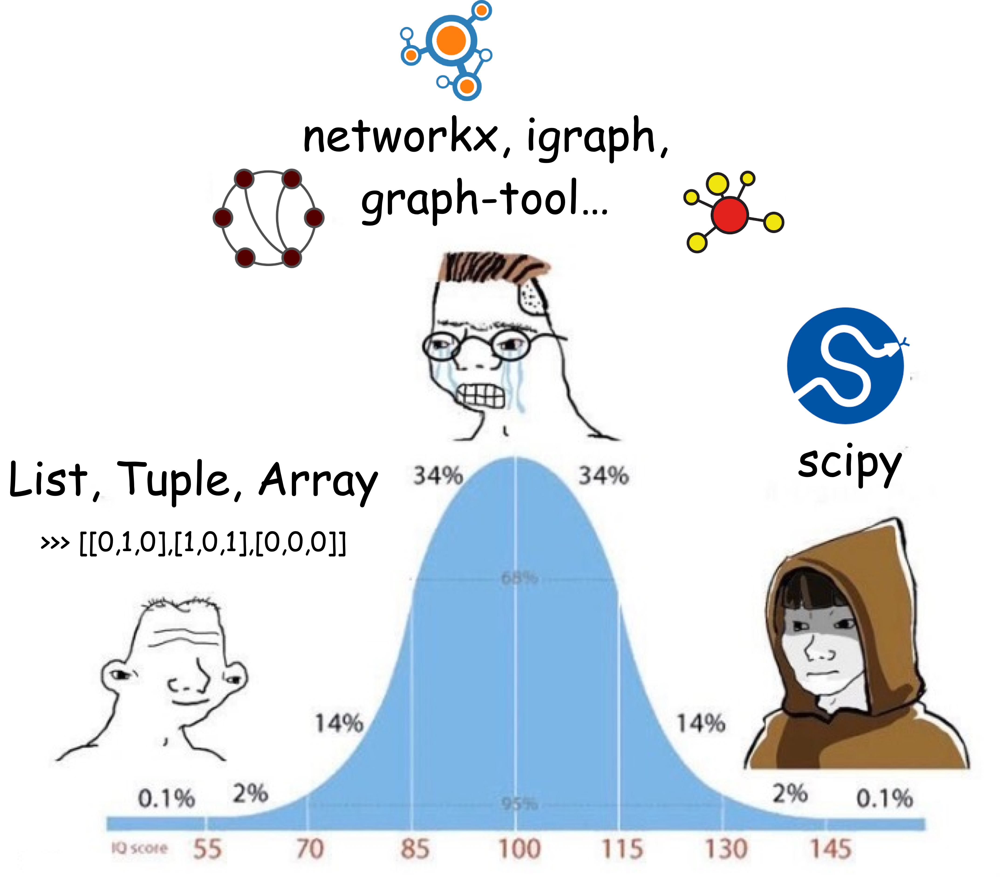

Toolbox for network analysis#
Here are some useful tools for network analysis in Python:
Python built-in data structures (list, tuple, dict)
networkx - a beginner-friendly library for network analysis
igraph - a mature library with a wide range of algorithms
graph-tool - for stochastic block models
scipy - for analyzing large networks
pytorch-geometric - for graph neural networks
While networkx is a popular and beginner-friendly library for network analysis in Python, we’ll be using igraph in this course. igraph is a mature library with a wide range of algorithms, originally developed for R.
Why igraph instead of networkx?
Because networkx has some persistent bugs in the implementations of some algorithms (e.g., LFR benchmark and weighted degree assortativity), which can skew the analysis.
igraph offers more reliable implementations.
We’ll also use scipy for scientific computing. scipy is one of the most popular Python libraries and also a powerful network analysis tool, especially for large networks. While it requires a bit more effort to learn, once you get the hang of it, you’ll find it’s a powerful tool for your network analysis projects.
